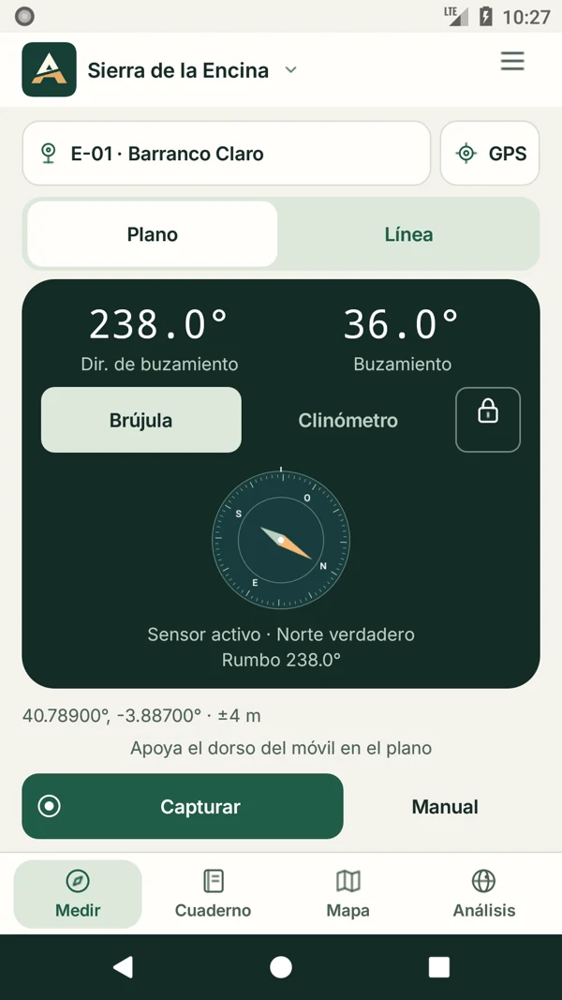
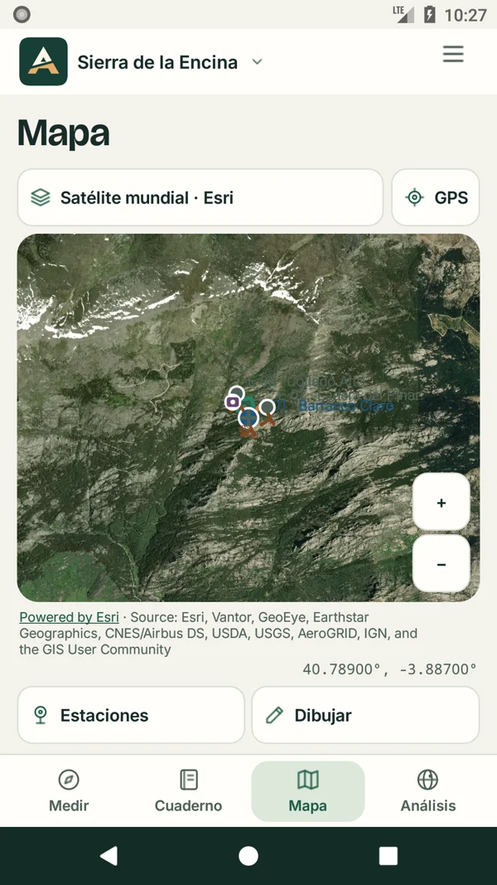
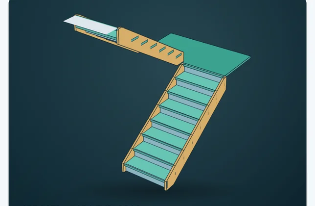

Portfolio · Valencia
Desarrollo
Android.
Más de diez años desarrollando aplicaciones nativas. Aquí reúno mis proyectos propios para campo, obra y taller.
Ver proyectos

Proyectos seleccionados

Aflorario
Cuaderno geológico con brújula, clinómetro y mapas sin conexión.

Evidobra
Registro fotográfico de visitas a obra y exportación de informes en PDF.

Doblacota
Cálculo de desplazamientos y distancias entre dobleces para instaladores.

PeldaPlan
Diseño de escaleras con vista 3D y plantillas de peldaños a escala real.
El Impostor
Juego Android sin conexión con Kotlin, Jetpack Compose y persistencia local. El repositorio incluye pruebas unitarias e instrumentadas.
Cómo trabajo
En mis proyectos aplico desarrollo asistido por IA guiado por especificaciones (Spec-Driven Development). Defino criterios de aceptación y uso arneses de ejecución y guardarraíles para limitar la actuación de los agentes. Reviso personalmente el código y valido los cambios con pruebas.